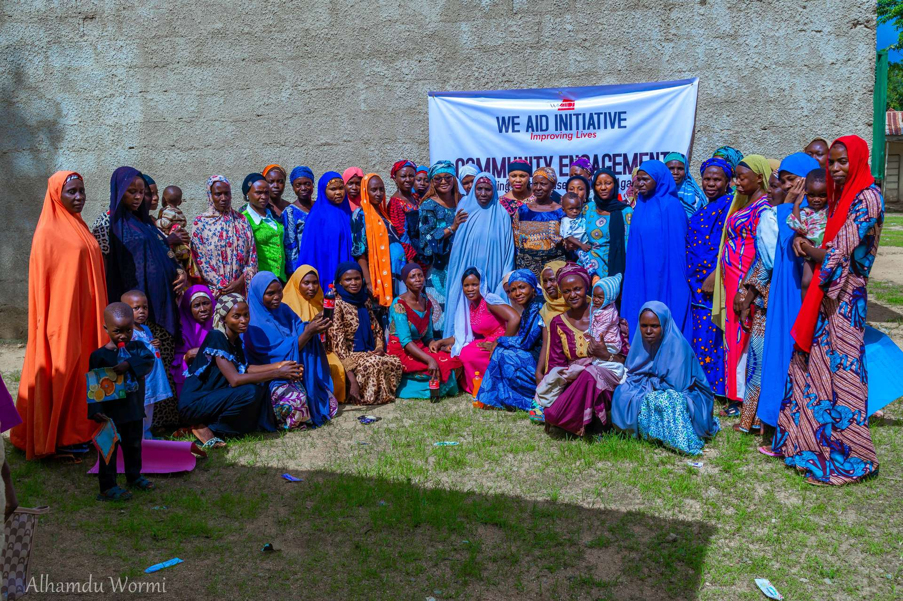

MilestoneBabban abu
Justice Center for GBV established in Bauchi StateAn kafa Cibiyar Adalci ta GBV a Jihar Bauchi
Inauguration of the Justice Center Actors, alongside stakeholders, on 25 July 2024.Karbar Cibiyar Adalci na GBV tare da masu ruwa da tsaki a ranar 25 ga Yuli 2024.